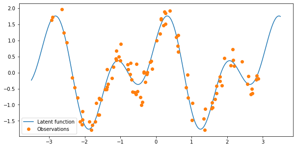
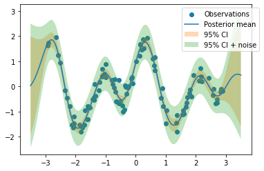

Simple GP Regression#
The flow and some components of this notebook are inspired from GPJAX regression notebook
import os
os.environ["CUDA_VISIBLE_DEVICES"] = ""
import jax
import jax.random as jr
import jax.numpy as jnp
import jax.tree_util as jtu
import tensorflow_probability.substrates.jax as tfp
tfd = tfp.distributions
tfb = tfp.bijectors
import arviz as az
import matplotlib.pyplot as plt
import jaxopt
import gpax.kernels as gpk
import gpax.likelihoods as gpl
import gpax.means as gpm
from gpax.models import ExactGPRegression
from gpax.utils import index_pytree
jax.config.update("jax_enable_x64", True)
/home/patel_zeel/miniconda3/envs/jax_gpu/lib/python3.9/site-packages/pkg_resources/__init__.py:122: PkgResourcesDeprecationWarning: LOCAL is an invalid version and will not be supported in a future release
warnings.warn(
/home/patel_zeel/miniconda3/envs/jax_gpu/lib/python3.9/site-packages/pkg_resources/__init__.py:122: PkgResourcesDeprecationWarning: pre-0.1 is an invalid version and will not be supported in a future release
warnings.warn(
Dataset#
n = 100
noise = 0.3
key = jr.PRNGKey(123)
x = jr.uniform(key=key, minval=-3.0, maxval=3.0, shape=(n,)).sort().reshape(-1, 1)
f = lambda x: (jnp.sin(4 * x) + jnp.cos(2 * x)).flatten()
signal = f(x)
y = signal + jr.normal(key, shape=signal.shape) * noise
xtest = jnp.linspace(-3.5, 3.5, 500).reshape(-1, 1)
ytest = f(xtest)
print(x.shape, y.shape, xtest.shape, ytest.shape)
2023-02-03 20:58:18.613670: E external/org_tensorflow/tensorflow/compiler/xla/stream_executor/cuda/cuda_driver.cc:267] failed call to cuInit: CUDA_ERROR_NO_DEVICE: no CUDA-capable device is detected
WARNING:jax._src.lib.xla_bridge:No GPU/TPU found, falling back to CPU. (Set TF_CPP_MIN_LOG_LEVEL=0 and rerun for more info.)
(100, 1) (100,) (500, 1) (500,)
fig, ax = plt.subplots(figsize=(10, 5))
ax.plot(xtest, ytest, label="Latent function")
ax.plot(x, y, "o", label="Observations")
ax.legend(loc="best");

Defining the kernel#
base_kernel = gpk.RBF(x, lengthscale=0.5) # x is used to infer the input dimension
# OR
# base_kernel = gpk.RBF(x)
kernel = gpk.Scale(x, base_kernel, variance=1.0)
# OR
# kernel = gpk.Scale(x, base_kernel)
print(kernel)
Scale(RBF)
kernel.get_parameters()
{'base_kernel': {'lengthscale': DeviceArray([0.5], dtype=float64, weak_type=True)},
'variance': DeviceArray(1., dtype=float64, weak_type=True)}
kernel.initialize(key) # random initialization
kernel.get_parameters()
{'base_kernel': {'lengthscale': DeviceArray([0.55735674], dtype=float64)},
'variance': DeviceArray(1.349939, dtype=float64)}
kernel_fn = kernel.get_kernel_fn()
K, log_prob = kernel_fn(x, x)
K.shape, log_prob
((100, 100), 0.0)
Log prob in the above cell is used for advanced uses of this library. For now, it is totally fine to ignore it and consider returning this as a design choice. In eval model, the log prob is not returned.
kernel.eval()
kernel_fn = kernel.get_kernel_fn()
K = kernel_fn(x, x)
K.shape
(100, 100)
Defining the likelihood#
likelihood = gpl.Gaussian(scale=1.0)
print(likelihood)
Gaussian
likelihood.get_parameters()
{'scale': DeviceArray(1., dtype=float64, weak_type=True)}
likelihood.initialize(key) # random initialization
likelihood.get_parameters()
{'scale': DeviceArray(1.349939, dtype=float64)}
Defining the Mean Function#
mean = gpm.Average() # take the average of the observations as the mean
print(mean)
Average
mean.get_parameters()
{}
Defining the model#
model = ExactGPRegression(kernel, likelihood, mean)
model.get_parameters()
{'kernel': {'base_kernel': {'lengthscale': DeviceArray([0.55735674], dtype=float64)},
'variance': DeviceArray(1.349939, dtype=float64)},
'likelihood': {'scale': DeviceArray(1.349939, dtype=float64)},
'mean': {}}
model.initialize(key) # random initialization
model.get_parameters()
{'kernel': {'base_kernel': {'lengthscale': DeviceArray([0.62734237], dtype=float64)},
'variance': DeviceArray(0.55735674, dtype=float64)},
'likelihood': {'scale': DeviceArray(0.39294468, dtype=float64)},
'mean': {}}
model.log_probability(x, y)
DeviceArray(-66.73193055, dtype=float64)
Optimize the hyperparameters#
key = jr.PRNGKey(2)
lr = 0.01
epochs = 500
result = model.fit(key, x, y, lr=lr, epochs=epochs) # default optimizer is Adam
plt.plot(result["loss_history"]);

print(model.log_probability(x, y))
model.get_parameters()
-34.985722644634365
{'kernel': {'base_kernel': {'lengthscale': DeviceArray([0.45091071], dtype=float64)},
'variance': DeviceArray(1.41713267, dtype=float64)},
'likelihood': {'scale': DeviceArray(0.25039347, dtype=float64)},
'mean': {}}
Plot Predictions#
model.plot(x, y, xtest);

Run multiple restarts#
def single_run(key):
model.initialize(key)
return model.fit(key, x, y, lr=lr, epochs=epochs)
keys = jr.split(key, 10)
results = jax.vmap(single_run)(keys)
best_loss_idx = jnp.nanargmin(results["loss_history"][:, -1]) # nanargmin ignores NaNs
best_result = index_pytree(results, best_loss_idx) # get the best result
model.set_raw_parameters(best_result["raw_params"])
print(model.log_probability(x, y))
model.plot(x, y, xtest);
-34.985524393958784
Use second order optimization#
def loss_fn(raw_params, x, y):
model.set_raw_parameters(raw_params)
return -model.log_probability(x, y)
key = jr.PRNGKey(6)
raw_params = model.initialize(key).get_raw_parameters()
solver = jaxopt.ScipyMinimize(fun=loss_fn)
solution = solver.run(raw_params, x=x, y=y)
model.set_raw_parameters(solution.params)
print(model.log_probability(x, y))
model.plot(x, y, xtest);
-34.98552439395887